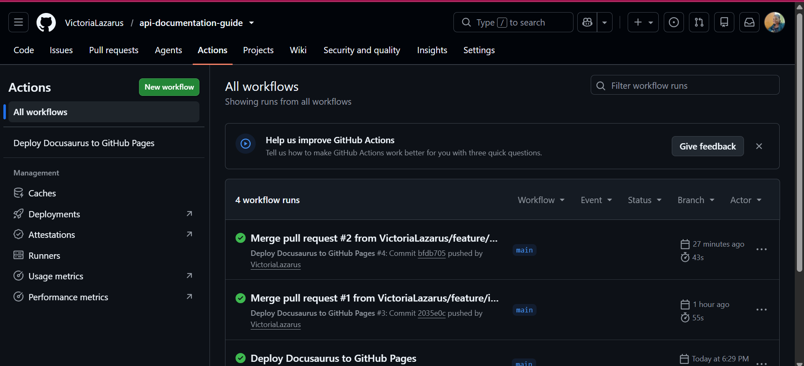

✦ Case Study
Most API documentation guides teach APIs the way you'd train a developer — assuming you already read code fluently. I built the guide I wish I'd had: one that teaches API documentation from a technical writer's starting point, and used the project to prove out a full docs-as-code publishing workflow along the way.
$ git push origin main
✓ Build triggered — GitHub Actions
✓ Docusaurus site built
✓ Deployed to GitHub Pages
$ live in ~90 seconds, no manual steps
When I started learning to document APIs, most resources fell into one of two camps: developer tutorials that taught you to build an API, or reference docs that assumed you already understood REST, JSON, and authentication cold. Neither one taught the actual skill a technical writer needs — how to read an API and turn it into documentation a developer can use, when you're not the one who wrote the code.
There wasn't a resource written for someone standing where I was standing. So I built one.
The Beginner's Guide to API Documentation teaches API documentation from the technical writer's side of the desk — not the developer's. Instead of starting with "here's how to call this endpoint," it starts where most technical writers actually start: not knowing what an API is yet, needing to understand HTTP and JSON before touching an endpoint, and needing to read an API's behavior well enough to document it accurately, without being the person who built it.
The guide walks through that path in order: API fundamentals, testing endpoints to understand real request/response behavior, then documentation itself — parameters, examples, authentication, error handling. It closes with the part most guides skip entirely: how the docs actually get built and published — Git, docs-as-code workflows, and Docusaurus.
That last stretch is also where the project stops being content and becomes a working system: I used it to build a real CI/CD pipeline, so the guide about docs-as-code is itself published using docs-as-code.
The publishing chapter of the guide isn't theoretical — it's a description of how this exact site works.
main — no manual build-and-upload step.
GitHub Actions — every push to main triggers an automated build and deploy to GitHub Pages.
This project does two things at once. It's documentation written for a reader nobody else was writing for — a technical writer who needs to learn API documentation from the ground up, not a developer who already knows what a payload is. And it's proof that I can own the full pipeline that gets documentation like this published: Git-based version control, automated builds, and a static-site-generator workflow, applied end to end on something I built myself.